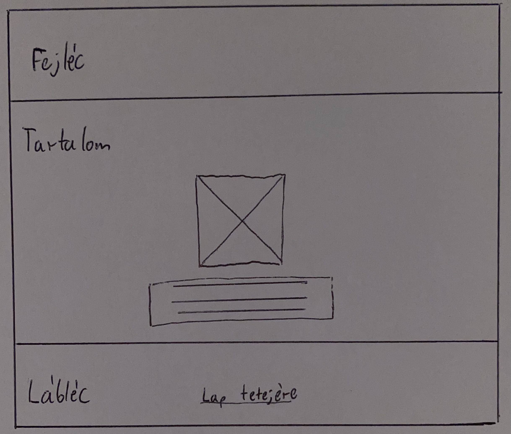

Nehézségek:
A legnagyobb nehézségek nekem a motiváció volt. Nagyon sokáig nem álltam neki a feladatnak, de amikor elkezdtem nagyon megtetszett. A technikai nehézségek közül a képek beillesztése volt elég nehéz feladat. Ha sikerült beillesztenem egy képet az teljjesen széttolta a weblapot.
Sajnos sokat ügyetlenkedtem az elején és rájöttem, hogy sosem leszek webdesigner, mert nem ez az én területem.